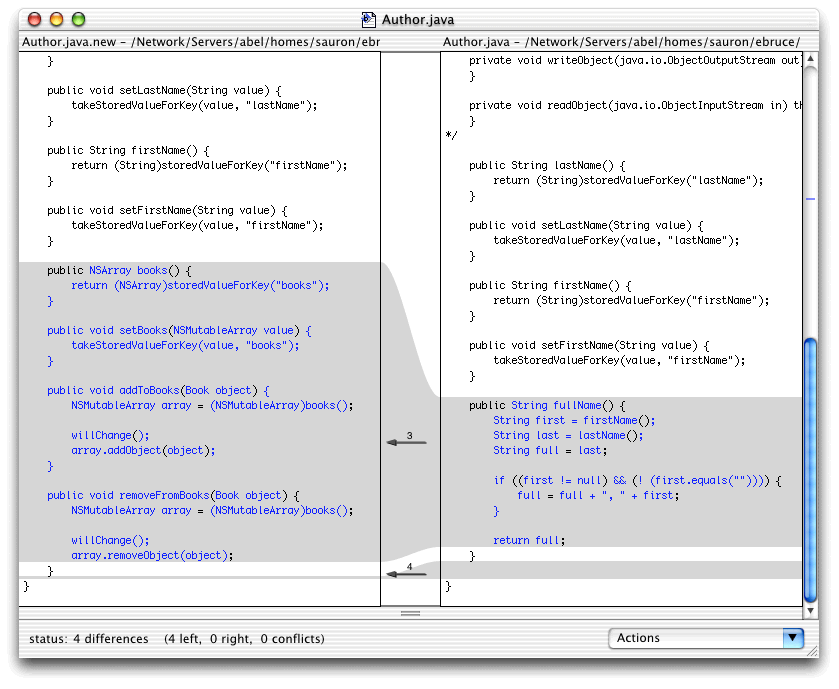
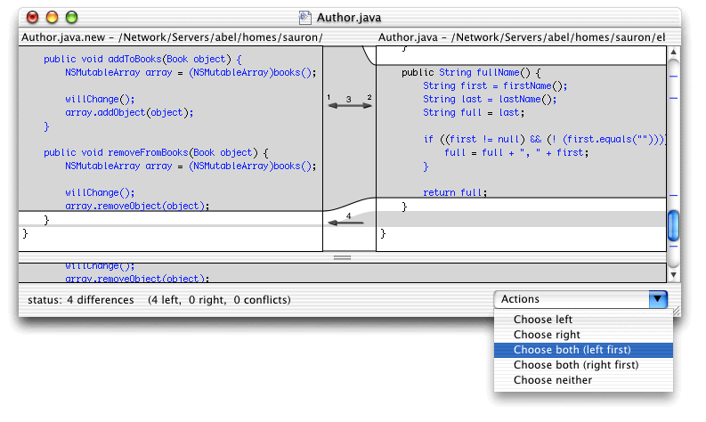
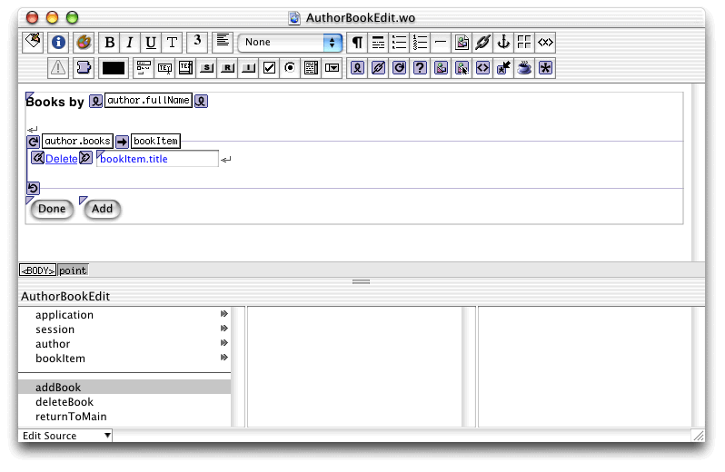
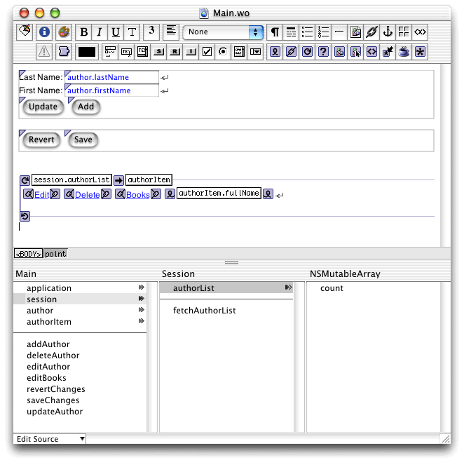

| PATH |

In this section you'll add to your application the ability to maintain an author's books.
Before you can begin, you need to add the Java classes for
Author and Book to your project. Because you've customized Author.java,
you'll need to merge the new code generated by EOModeler with
your own.
Authors.eomodeld in
EOModeler.Author.java class.You are notified that Author.java already
exists and asked how you wish to proceed.
Click Merge. The FileMerge application launches.
As Figure 12-2 shows, FileMerge outlines and separates the differences between the two files. The file generated by EOModeler is on the left, and the the one that you customized is on the right.
Figure 12-2 FileMerge window
FileMerge highlights the differences between the files. Each highlighted area has a numbered arrow.
In this case you need to integrate the differences
into the new file. The most important difference to include in the
new Author.java file
is the fullName method.
Click
the arrow in the area that contains the fullName method
and choose "Choose both (left first)" from the Actions pop-up
menu, as shown in Figure 12-3.
Figure 12-3 FileMerge window—adding fullName method to new Author.java
Repeat the process with the rest of the highlighted areas (you can ignore sections containing comments).
Choose File > Save
Merge to save the new Author.java file.
Book.java to
the project.Book.java in
your project's directory.Book.java to
the project.(For details on adding a custom Java class to a project, see "Adding a Java Class to the Project".)
The author method in Listing 12-1 implements
the author relationship, a to-one relationship from Book to Author.
Listing 12-1 The methods that implement the author relationship in Book.java
public Author author() {
return (Author)storedValueForKey("author");
}
public void setAuthor(Author value) {
takeStoredValueForKey(value, "author");
}
}
Enterprise Objects follows the procedure described in "To-One Relationships" when
you access the author property
of Book objects.
The code in Listing 12-2 implements the to-many relationship between Author
and Book, books.
Listing 12-2 The methods that implement the books relationship in Author.java
public NSArray books() {
return (NSArray)storedValueForKey("books");
}
public void setBooks(NSMutableArray value) {
takeStoredValueForKey(value, "books");
}
public void addToBooks(Book object) {
NSMutableArray array = (NSMutableArray)books();
willChange();
array.addObject(object);
}
public void removeFromBooks(Book object) {
NSMutableArray array = (NSMutableArray)books();
willChange();
array.removeObject(object);
}
}
Notice that the books associated with a particular author
can be retrieved as an NSArray simply by calling the books method.
The NSArray returned is an array of Book objects. Changes made to
them are automatically tracked by the editing context and are saved when saveChanges is
called. Further, a book can be added to or removed from an author's list
using the two provided methods, addToBooks and removeFromBooks.
In that case, however, the editing context has to be notified of
the change.
At the database level, the AUTHOR_ID column in the BOOK table
corresponds to the AUTHOR_ID of the owning AUTHOR row. Adding a
book to an author's array is actually a matter of setting AUTHOR_ID
on the new BOOK row to the same value as the author's AUTHOR_ID.
When you use the addToBooks method,
Enterprise Objects takes care of updating the value of the authorId property
of the Book object for you.
In this section you'll create the component that allows your application's user to maintain the books of a specific author.
After performing the steps below, your AuthorBookEdit.wo component
should look like Figure 12-4.
This component allows editing the list of books an author has written.
AuthorBookEdit.wo.AuthorBookEdit.wo in
WebObjects Builder.author key
to the component, choose Author as its type, and include accessor
methods.bookItem key
to the component, choose Book as its type, and do not include accessor
methods.deleteBook that
returns null.addBook that
returns null.returnToMain that
returns an object of type Main.Books by ",
add a WOString after it, and press Shift-Enter.author.fullName.Bind the list attribute
to author.books.
Bind
the item attribute to bookItem.
Add a WOHyperlink, a space character, and a WOTextField inside the WORepetition and press Shift-Enter.
Enter Delete as
the WOHyperlink's caption, and bind its action attribute
to deleteBook.
Bind
the WOTextField's value attribute
to bookItem.title.
Enter "Done" for
the value attribute of
the first WOSubmitButton, and bind its action attribute
to returnToMain.
Enter "Add" for
the value attribute of
the second WOSubmitButton, and bind its action attribute
to addBook.
Select all the elements by choosing Edit > Select All.
Choose Forms > WOForm.
Click anywhere inside a WOForm where there are no elements.
Choose Window > Inspector.
Choose true for
the multipleSubmit attribute
of the WOForm.
AuthorBookEdit.wo.Figure 12-4 AuthorBookEdit.wo
The Java code of the AuthorBookEdit component needs to be
edited to implement the procedures needed to add and delete books
from the books relationship
of Author objects. However, all you have to do is maintain an array
of books, in the same way as you would manipulate an NSArray (add
an object to the array to add a book, and remove objects from it
to delete books). The only additional code you need to include is
to notify the editing context of the changes made to the array.
deleteBook method
so that it looks like Listing 12-3.Listing 12-3 The deleteBook method in AuthorBooEdit.java
public WOComponent deleteBook() {
// get editing context from book object
EOEditingContext ec = bookItem.editingContext();
// delete book from its editing context
ec.deleteObject(bookItem);
// remove object from relationship
author.removeObjectFromBothSidesOfRelationshipWithKey(bookItem, "books");
return null;
}The
action method first removes the book from the books array
of author, and then notifies the editing context that the enterprise
object in question should be deleted the next time changes are saved.
When
the page refreshes, the book in question is no longer displayed
in the list because it has been removed from the books array
(relationship) by the removeObjectFromBothSidesOfRelationshipWithKey method.
addBook method
so that it looks like Listing 12-4.Listing 12-4 The addBook method in AuthorBookEdit.java
public WOComponent addBook() {
// get editing context
EOEditingContext ec = session().defaultEditingContext();
// create new book object
Book newBook = new Book();
newBook.setTitle("New Book");
// insert new book into editing context
ec.insertObject(newBook);
// add new book to books and set author for it
author.addObjectToBothSidesOfRelationshipWithKey(newBook, "books");
return null;
}The addObjectToBothSidesOfRelationshipWithKey method
takes care of adding the new book to the books array
of author, as well as
setting the author property
for the new book. Alternatively, you could have set each relationship
individually, as shown in Listing 12-5.
Listing 12-5 Method calls to add a book and set its author
author.addToBooks(newBook); newBook.setAuthor(author);
The major change that needs to be made to the Session.java class
is adding the authorList instance
variable. Each Session object also needs to fetch the list of authors
during its creation.
fetchSpec instance
variable definition from Main.java and
paste it in Session.java:
private EOFetchSpecification fetchSpec;
Listing 12-6 The constructor in Session.java
public Session() {
super();
// build fetch specification
fetchSpec = new EOFetchSpecification("Author", null, null);
// fetch
fetchAuthorList();
}fetchAuthorList method
in Listing 12-7.
Listing 12-7 The fetchAuthorList method in Session.java
public void fetchAuthorList() {
// get editing context
EOEditingContext ec = defaultEditingContext();
// fetch
authorList = new NSMutableArray(ec.objectsWithFetchSpecification(fetchSpec));
}addAuthor method in Listing 12-8. (You
can copy and paste the addAuthor method
in Main.java and make the necessary modifications.)
Listing 12-8 The addAuthor method in Session.java
public boolean addAuthor(Author author) {
// add only if the author is not already in the list
if (! authorList.containsObject(author)) {
// add author to list
authorList.addObject(author);
// insert author into editing context
defaultEditingContext().insertObject(author);
return true;
}
else {
return false;
}
}deleteAuthor method in Listing 12-9. (You
can copy and paste the deleteAuthor method
in Main.java, and make the necessary modifications.)
Listing 12-9 The deleteAuthor method in Session.java
public void deleteAuthor(Author author) {
// remove author from authorList
authorList.removeObject(author);
// get object's editing context
EOEditingContext ec = author.editingContext();
// remove author from object graph
ec.deleteObject(author);
}authorList instance
variable.authorList,
set its type to a mutable array of Author, and generate accessor
methods.The Main component needs to display the AuthorBookEdit component,
so that the application's user can edit an author's books. To
accomplish that, a WOHyperlink and its action need to be added to Main.wo.
A new action, editBooks,
needs to be added to the component. It also needs a new WOHyperlink,
which invokes the new action. After completing the required changes,
your Main.wo should look
like Figure 12-5.
Main.wo in
WebObjects Builder.editBooks that
returns AuthorBookEdit.Set the caption to Books and
bind its action attribute
to editBooks.
list attribute
to session.authorList.authorList key.authorList in
Main's browser.Main.wo.Figure 12-5 Main.wo with the editBooks action and the Books WOHyperlink
private Session session;
Listing 12-10 The constructor in Main.java
public Main(WOContext context) {
super(context);
// get session
session = (Session)session();
// get editing context
editingContext = session.defaultEditingContext();
// create a new author object (where form data is stored)
author = new Author();
}addAuthor method
so that it looks like Listing 12-11.Listing 12-11 The addAuthor method in Main.java—uses the addAuthor method in Session.java
public WOComponent addAuthor() {
if (session.addAuthor(author) {
// create a new author
author = new Author();
}
return null;
}deleteAuthor method so that
it looks like Listing 12-12.Listing 12-12 The deleteAuthor method in Main.java—uses the deleteAuthor method in Session.java
public WOComponent deleteAuthor() {
session.deleteAuthor(authorItem);
return null;
}editBooks method
so that it looks like Listing 12-13.Listing 12-13 The editBooks method in Main.java—sends Author object to AuthorBookEdit component
public AuthorBookEdit editBooks() {
AuthorBookEdit nextPage = (AuthorBookEdit)pageWithName("AuthorBookEdit");
// Initialize your component here
nextPage.setAuthor(authorItem);
return nextPage;
}The editBooks method
needs to send the author whose books are to be edited to the AuthorBookEdit
component (the next page to be displayed).
revertChanges method
so that it matches Listing 12-14.Listing 12-14 The revertChanges method in Main.java—uses default editing context and the fetchAuthorList method in Session.java
public WOComponent revertChanges() {
// revert object graph
editingContext.revert();
// refetch
session.fetchAuthorList();
return null;
}This
method now uses the session's fetchAuthorList method
because the author list is stored in the session, not the Main component.
Main.java.
© 2001 Apple Computer, Inc.